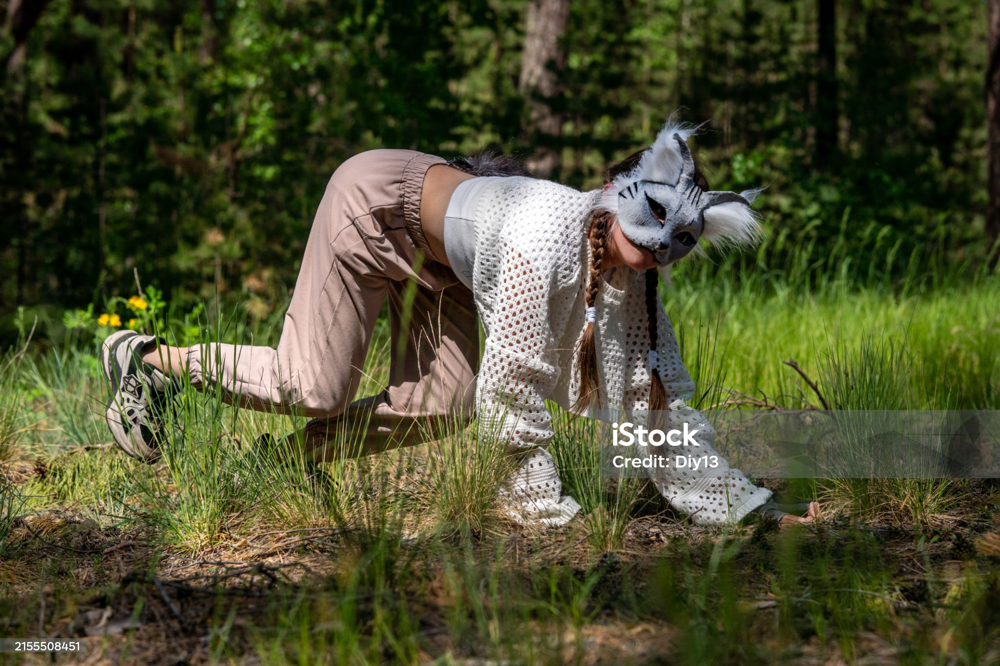
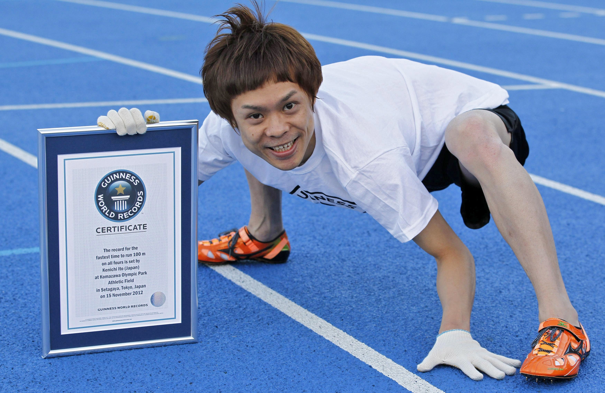
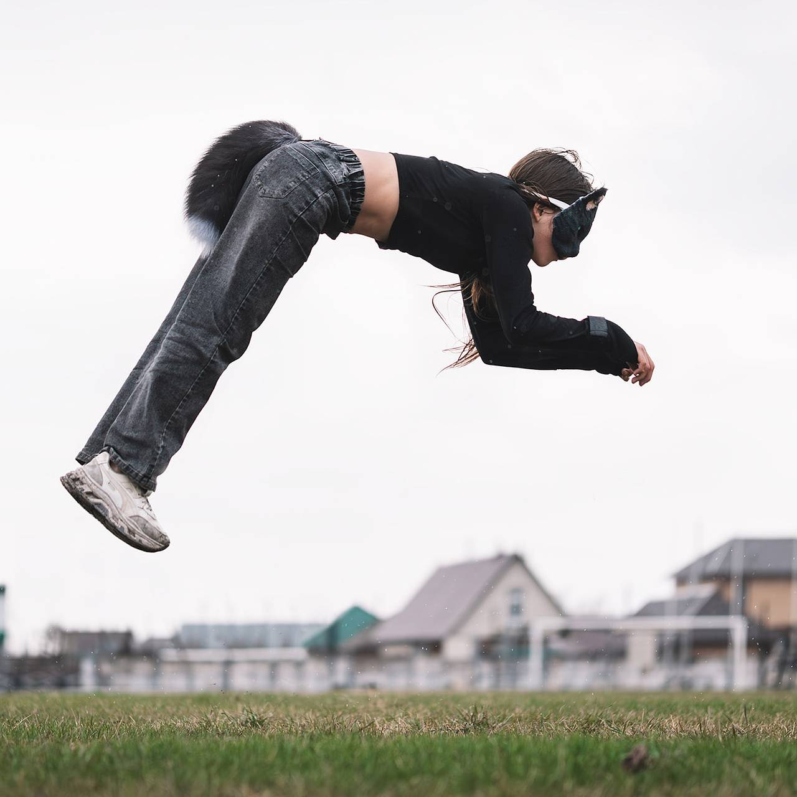

Що таке Квадробінг?
Квадробіка (Quadrobics) — це не просто імітація рухів тварин. Це складна атлетична дисципліна, що вимагає синхронної роботи всього тіла, високої концентрації та розуміння біомеханіки. Вона поєднує в собі елементи паркуру, гімнастики та функціонального тренінгу.

Історія виникнення

Усе почалося з японця Кенічі Іто. Його називають «людиною-мавпою» не через образу, а через його неймовірне досягнення. Кенічі роками вивчав поведінку та рухи приматів, щоб адаптувати їх для людської анатомії.
У 2008 році він офіційно потрапив до Книги рекордів Гіннеса, подолавши дистанцію 100 метрів на чотирьох кінцівках за 18.58 секунди. Його техніка стала фундаментом для сучасного квадробінгу, довівши, що таке пересування може бути швидким та ефективним.
Класифікація рухів (Алюри)
Для правильного розвитку навичок важливо розрізняти типи пересування. Кожен з них має свою складність та темп:
| Назва алюру | Опис техніки | Швидкість | Складність |
|---|---|---|---|
| Вок (Walk) | Почергове переставляння рук та ніг. База для новачків. | Низька | |
| Трот (Trot) | Двотактний рух, де по черзі рухаються діагональні пари кінцівок. | Середня | |
| Галоп (Gallop) | Стрибкоподібний рух з фазою зависання в повітрі. Вимагає сильного «кору». | Висока |
